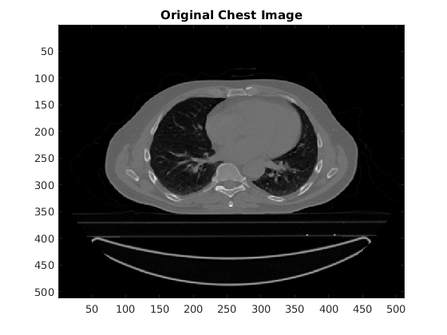
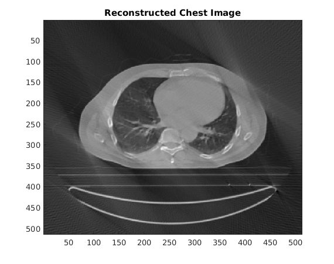
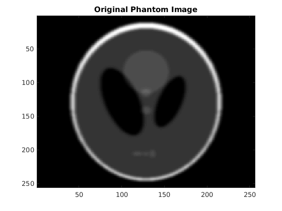
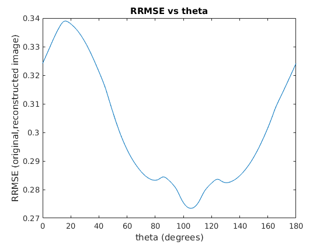
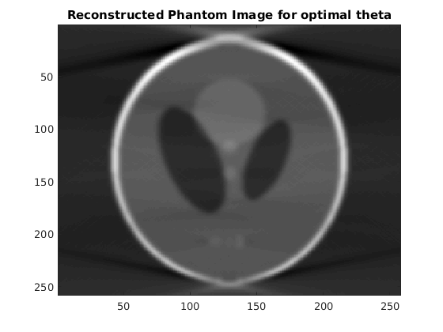

Contents
CT Chest Image
load('../data/CT_Chest.mat');
imagesc(imageAC);colormap(gray);title('Original Chest Image');
rrmse = zeros(181,1);
wb = waitbar(0,'Please wait...');
for theta = 0:1:180
reconstructed_image = iradon(radon(imageAC,theta:1:theta+150),theta:1:theta+150);
rrmse(theta+1) = RRMSE(imageAC,reconstructed_image(2:513,2:513));
waitbar(theta/180);
end
close(wb);
figure;
plot(0:180,rrmse);title('RRMSE vs theta');
xlabel('theta (degrees)');
ylabel('RRMSE (original,reconstructed image)');[~,theta] = min(rrmse);
theta = theta-1;
fprintf('The optimal angle is theta = %d degrees',theta);
reconstructed_image = iradon(radon(imageAC,theta:1:theta+150),theta:1:theta+150);
figure;
imagesc(reconstructed_image);colormap(gray);title('Reconstructed Chest Image for optimal theta');
The optimal angle is theta = 53 degrees
 
Phantom Image
load('../data/myPhantom.mat');
figure;
imagesc(imageAC);colormap(gray);title('Original Phantom Image');
rrmse = zeros(181,1);
wb = waitbar(0,'Please wait...');
for theta = 0:1:180
reconstructed_image = iradon(radon(imageAC,theta:1:theta+150),theta:1:theta+150);
rrmse(theta+1) = RRMSE(imageAC,reconstructed_image(2:257,2:257));
waitbar(theta/180);
end
close(wb);
figure;
plot(0:180,rrmse);title('RRMSE vs theta');
xlabel('theta (degrees)');
ylabel('RRMSE (original,reconstructed image)');
[~,theta] = min(rrmse);
theta = theta-1;
fprintf('The optimal angle is theta = %d degrees',theta);
reconstructed_image = iradon(radon(imageAC,theta:1:theta+150),theta:1:theta+150);
figure;
imagesc(reconstructed_image);colormap(gray);title('Reconstructed Phantom Image for optimal theta');
The optimal angle is theta = 105 degrees
  